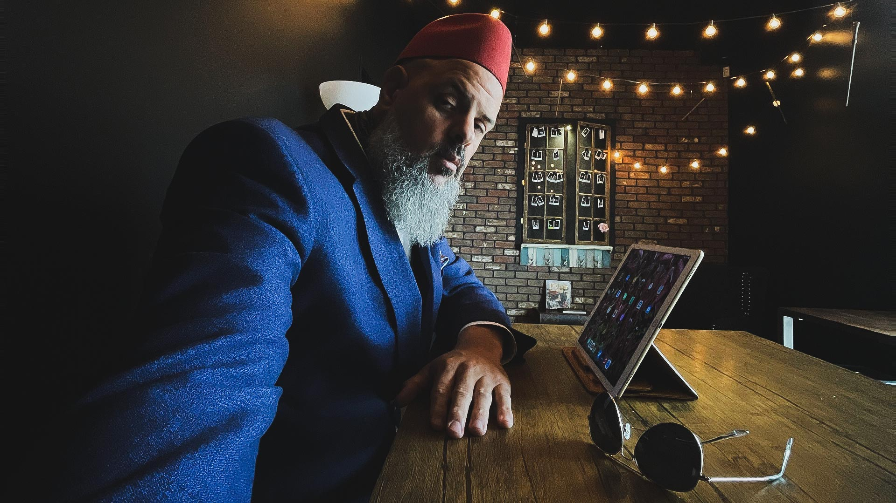
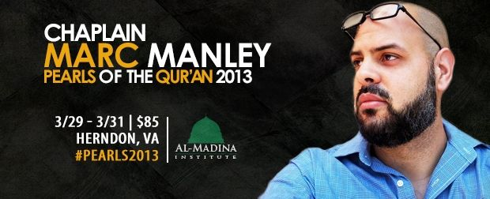
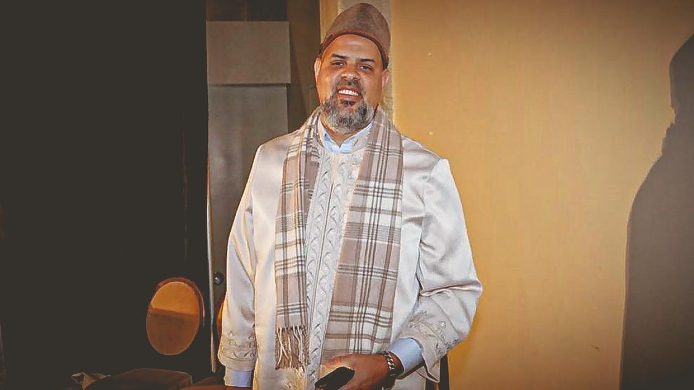

Who Am I and How Did I Get Here?
I grew up in a household where grace was said at the table and we always said our prayers before bedtime, but that was the extent of my religious upbringing [at least in terms of rituals]. And yet, I was filled with the love and notion of God from the very beginning. As a child, I was curious about religion. I would often sit for hours by myself reading my mother’s Bible, fascinated with the stories and moral teachings it contained. But it would not be until after my graduation from high school that I would experience what I would now term, an existential crisis. At the ripe age of eighteen I became terrifyingly aware of my finite existence and concluded, “there must be something more to all of this [life]”. The following year, after studying any and all religious traditions I could find, I converted to Islam (in 1992) and began a process of studying the religion. I had the opportunity to sit and study with several Muslim teachers in the Detroit metro area. After a brief stint in music (both playing jazz and spinning it for WEMU I taught Arabic and Islamic Studies in the Detroit area for two years.
My History: 1992 - 2008
The author of The Manrilla Blog: Exploring Islam In America Through the Social Sciences (now defunct), this blog has now been moved to its present location here, where I write about pertinent issues facing America’s Muslim community today. Steeped in the intellectual tradition of Islam, I have endeavored to broker a new path of American Muslim thought by giving careful analysis of social and cultural trends of the diverse population of Muslims in America, seeking to provide a voice that at once speaks to the here and now of Muslims, yet rooted in the timeless philosophy of Islamic thought. My writing has been recognized through a number of venues, from the Philadelphia Inquirer as a top bookmark as well as the recipient of Best Design, in the 5th Annual Brass Crescent Awards.
The two decades has seen me involved in a number of ways in the Muslim community. In my early twenties, I was asked to teach Islamic studies along side Shaykh ‘Ali Sulaiman ‘Ali, of the ALIM Program, at Crescent Academy in Canton, Michigan. Since then, I have worked as a Muslim educator in subjects ranging from Arabic language, philosophy, and creed, to spirituality and self-purification. During my tenure at the University of Pennsylvania I teamed up with Adnan Zulficar, the Interfaith Fellow and Campus Minister to the Muslim Community at the University of Pennsylvania, to create and teach the Islamic Literacy Series. Notes and audio recordings can be found here.
In 2008, I completed an ijazah (license to teach) with Imam Anwar Muhaimin of the Quba Institute, in Philadelphia, in the area of khutbah. Since then, I have been working as a khatib, delivering Friday sermons at a variety of locations in and around the greater Philadelphia area. In addition, I have spoken at the Constitution Center in Philadelphia, Hillel, Charter School, and Yale University just to name a few venues.
Muslim Chaplaincy: 2011 - 2014
In August of 2011, it was my great pleasure to be appointed to the position of Muslim Chaplain at the University of Pennsylvania. Here, I worked alongside Revered Charles “Chaz” Howard in serving Muslims at Penn as well as the broader University community. 2012 also saw the pilot launch of a Muslim chaplain position at Drexel University. Both positions allowed me a wonderful learning opportunity and a chance to serve my faith community. I am grateful for the experience. In addition to my religious duties, I concurrently worked full-time at the School of Design (now the Weitzman School of Design) at the University of Pennsylvania, in the IT and instruction technology fields.
Imam Life: 2014 - Present
I am currently the Imam/Religious Director at Middle Ground, in Upland, California. While I will miss the Senegalese food and the occasional cheesesteak in Philly, I am happy to be serving the Muslim community in SoCal. I hope you will enjoy your time here and will visit again from time to time. And most importantly, you’ll leave some feedback. Feel free to contact me at imammarc [at] muslim [dot] center. Thanks for stopping by
— M